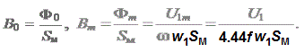
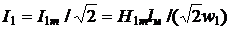
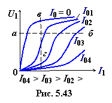

5.5.1.2. Семейство вольт-амперных характеристик
управляемого дросселя по первым гармоникам
управляемого дросселя по первым гармоникам
Под ВАХ по первой гармонике управляемого дросселя понимают графическую или аналитическую связь между действующим значением первой гармоники переменного напряжения U1 на обмотке w1 и действующим значением первой гармоники переменного тока I1 при постоянном токе I0, взятом в качестве параметра, т.е.
U1(I1) при I 0 = const.
ВАХ дросселя можно получить опытным путём с помощью схемы (рис. 5.41) или расчётным. Аналитический расчёт и построение ВАХ дросселя проводят, основываясь на аппроксимации кривой намагничивания H(В), например, гиперболическим синусом Н = αsh(βB), где α и β − коэффициенты, определяемые методом последовательного приближения. Например, найденное аналитическое выражение кривой намагничивания Н(В) для стали 1512 имеет вид Н = 0,245sh(6,85B).
Амплитуды постоянной и переменной составляющих магнитной индукции В0 и Вm определим через магнитные потоки и сечение магнитопровода Sм:
(5.23)
Формула (5.23) даёт возможность найти амплитуду переменной составляющей магнитной индукции по действующему значению синусоидального напряжения U1, частоте f, числу витков w1 и сечению Sм.
Следует обратить внимание на то, что при сделанных допущениях амплитуда магнитного потока не зависит от степени подмагничивания магнитопровода постоянным током.
Ток I0 = H0lм / w0, а действующее значение тока I1 определим из выражения: w1I1m = H1mlм;
.
При графическом построении ВАХ по первой гармонике U1(I1 ) (U1 = 4,44fw1SмBm – действующее значение напряжения) дросселя задаются различными значениями амплитуды напряжения U1m (т.е. Фm), по точкам строят кривую тока i в функции времени и путём разложения её в ряд Фурье находят соответствующие амплитуды первой гармоники тока I1m (пример графического построения кривой тока i(ωt) дан на рис. 5.42).
Аналитическое построение обсуждаемой характеристики выполняют, используя разложение гиперболического синуса и косинуса от постоянной и синусоидально изменяющейся составляющих магнитной индукции В = B0 + Bmsinωt в ряды Фурье, коэффициенты которых
описываются табулированными функциями Бесселя различных порядков от чисто
мнимого аргумента jβВm [3, c. 436]. Связь между амплитудой магнитной индукции Вm, амплитудой первой гармоники напряженности поля Н1m и постоянной составляющей индукции В0 в сердечнике имеет вид:
(5.24)
где −J1(jβBm) ≈ табулированная функция Бесселя первого порядка от чисто мнимого аргумента −jβВm [3, с. 65].
При этом постоянная составляющая напряжённости магнитного поля
 (5.25)
(5.25)
где −J0(jβBm) − функция Бесселя нулевого порядка.
На рис. 5.43 качественно изображены ВАХ управляемого дросселя по первым гармоникам. Параметром является ток управления  (подмагничивания) I0. ВАХ для первых гармоник используют
при расчёте установившихся режимов в нелинейных цепях, которые называют расчётом
по первым гармоникам. Воспользовавшись семейством ВАХ по первым гармоникам U1(I1), можно проанализировать изменение тока I1 от изменения тока I0 при U1 = const (см. пунктирную линию а–б на рис. 5.43), а при I1
= const − построить график U1 в функции X1, воспользовавшись пунктирной линией в–г.
При этом индуктивное сопротивление дросселя по первой гармонике X1 ≈ U1 / I1 (индуктивность дросселя L1 = X1 / ω) является функцией напряжения U1 и тока подмагничивания I0: изменяя ток подмагничивания, можно управлять сопротивлением X1 дросселя и, соответственно, током I1.